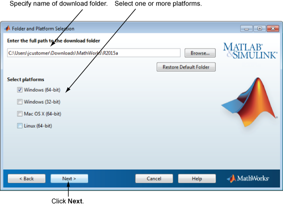

다운로드 옵션을 지정하려면:
MathWorks® 제품을 다운로드할 폴더의 이름을 지정합니다. 디폴트 다운로드 폴더를 그대로 두거나 찾아보기를 클릭하여 다른 폴더를 선택합니다. 폴더가 없으면 인스톨러가 폴더를 만듭니다.
폴더 이름을 지정할 때는 영숫자와 일부 특수 문자(예: 밑줄)를 사용할 수 있습니다. 폴더 이름으로 허용되지 않는 문자가 지정된 이름에 들어 있는 경우 인스톨러가 알려줍니다. 폴더 이름을 입력할 때 실수를 하여 처음부터 다시 시작하려는 경우 디폴트 폴더 복원을 클릭합니다. 원하는 항목을 선택한 후 다음을 클릭합니다.

플랫폼을 하나 이상 선택합니다. 선택한 플랫폼에 적합한 파일이 다운로드됩니다.